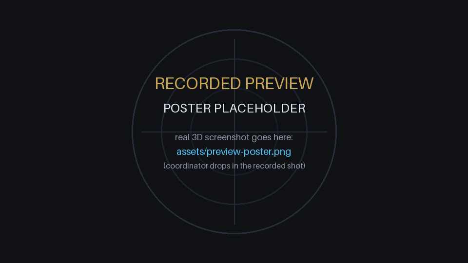

ST_Intersects queries against a collision map; ticking is a discrete
blocked / free state decision the database makes query by query — no physics
engine. The 34-part movement comes apart through m_blocked() asking the
database "who can move right now?", round by round. All of it runs as
DuckDB-WASM in your browser. Nothing in the code says how many degrees a beat
is — that falls out of the shapes.
04_take_apart.sql,
the disassembly predicates exactly as the browser executes them.
Break the Watch opens the 3D page with the experiment panel open: one real
geometric parameter (entry pallet stone offset, mm) regenerates the SQL geometry,
rebuilds the collision map and the prepared query, and shows the database verdicts
change — stalls and lock loss included, both produced by the solver, none faked.

ST_Intersects
verdict) is built live in SQL; one prepared query per frame decides whether the wheel
moves — the degrees-per-beat falls out of the shapes; nothing in the code says a
fixed angle. Stones glow red on collision, driven by the SQL verdict, not the renderer.